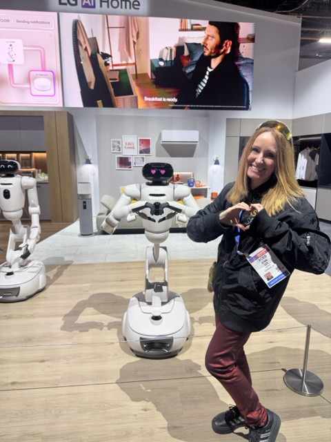
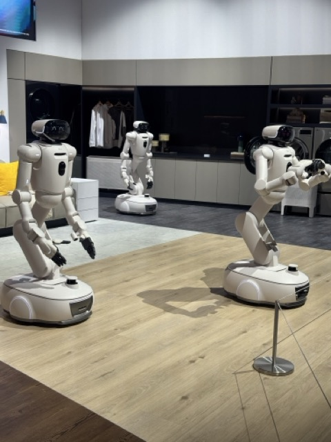
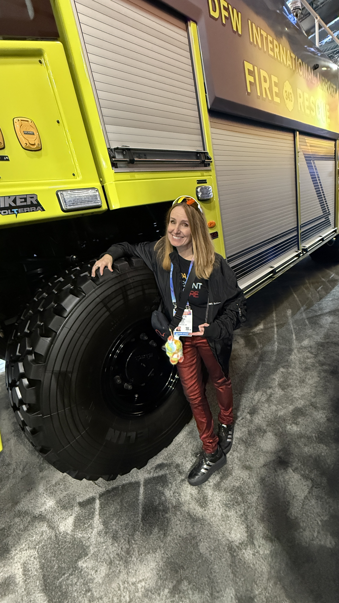
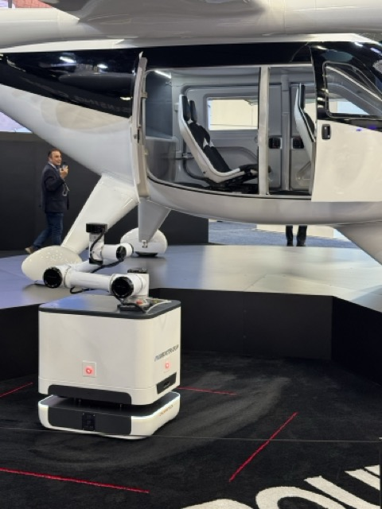
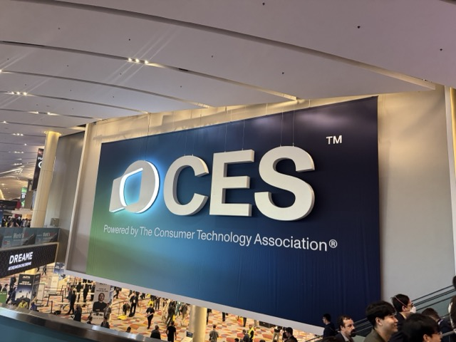

Smart glasses got all the headlines at CES 2026, and they deserved them. But some of the most memorable moments I brought home had nothing to do with eyewear. Humanoid robots. A driverless taxi on the Strip. A tunnel under Las Vegas in a Tesla.
This is part two of my CES 2026 report. Start with the smart glasses piece → Or jump to part three: makers, AI sessions, and what stuck →
AI Got Physical

LG's AI Home booth had three CLOi humanoid robots moving in choreographed sync in a fully staged living room. The crowd around them was three people deep. I waited my turn to get a photo. People were delighted, which is worth noting. There was no fear, no awkwardness. Just people genuinely excited to meet a robot.

Then there was the chess robot. SenseRobot has sold 120,000 units worldwide. Not a prototype. Not a pilot. A product people are actually buying. Physical AI is becoming mundane, and mundane is exactly what you want.
And then there's Oshkosh. Standing next to their airport fire truck, the first thing that hits you isn't the tech. It's the scale. I felt like I could mine for elements on an alien planet in that truck. Oshkosh is building vehicles for everyday heroes: firefighters, sanitation workers, emergency responders. Not all innovation looks like dancing robots. Sometimes it looks like a vehicle that can withstand chaos, keep people safe, and do its job without fail.

Outside the convention center, I actually rode in a Zoox autonomous taxi on the Las Vegas Strip. No driver. No steering wheel. Twinkling ceiling lights, expansive glass doors, a moon roof. Strong "Vegas nightlife, but make it autonomous" energy. Autonomy isn't just about getting from A to B. It's about reimagining the experience in between.
I also rode the Las Vegas Loop (The Boring Company's underground tunnel system), point-to-point in a Tesla, LEDs lining the tube walls. Between Zoox on the Strip and the Loop underneath it, CES had somehow turned Las Vegas's infrastructure into a living demo of what urban mobility might look like.

The Robots Aren't Dramatic. That's the Point.

Three humanoid robots dancing in an IKEA-esque living room. A chess robot with 120k units sold. An autonomous car you hail like an Uber. The technology is winning by becoming unremarkable. That's the real milestone: not the demos, but the mundane.
CES 2026 confirmed what I've believed since I put on a Quest for the first time in 2019: the spatial computing era is here. It's just not evenly distributed yet.
The glasses are getting fashionable. The AI is getting embedded. The robots are getting mundane.
I'll take that as progress.